כל מה שסטודנט או סטודנטית באחד מהקורסים שלי צריכים לקרוא לפני ההתחלה, ולהשאיר פתוח בזמן העבודה. איך לגשת ללימודים, אילו הנחות להוריד, מה פרויקט חזק חייב להראות, ואיפה למצוא דוגמאות עבודה, עוזרי קורס וספרי הלימוד שמאחורי הקורסים. למסות עומק על AI בהנדסת תוכנה ובאקדמיה, ראו את פוסטי הבלוג שלי.
התחילו כאן
קראו את אלה מוקדם. הם מעצבים איך תעבדו בתוצאות התואר ואיך יישפט כל מה שאתם מייצרים.
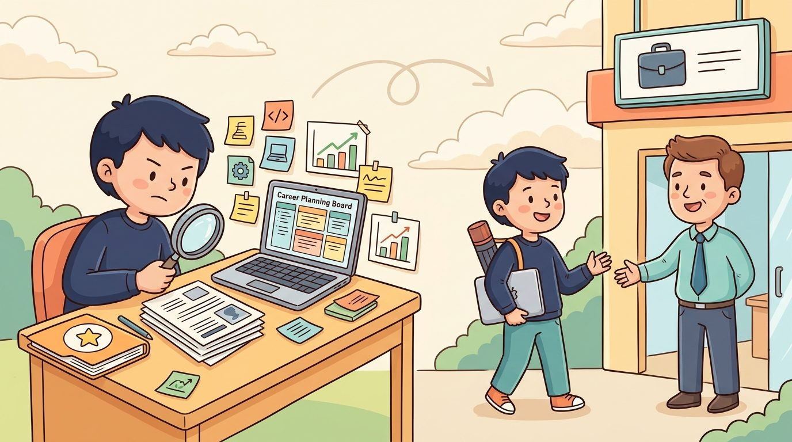
תתחילו מהתפקיד ולכו אחורה
Work Backward From the Job
Employers hire for specific roles, not for “CS graduates.” Five steps to prepare for the job market before you graduate: pick target roles, learn what employers actually expect, build a learning plan, build a convincing portfolio, and practice defending your work.
עצות לסטודנטים למדעי המחשב ב-2026
Advice to CS Students in 2026
Six pieces of advice for navigating a degree in the AI era, each with a pattern to adopt, an anti-pattern to avoid, and the inner statement that gives the anti-pattern away. Available in English and Hebrew.
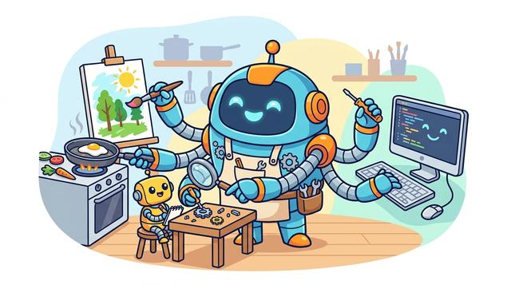
AI עושה הרבה יותר מלכתוב לכם קוד
AI Does Far More Than Write Your Code
Five ways to get real value from AI in your projects: invent new uses beyond generating code and slides, own every result, treat AI as a utility, and meet the higher bar it now sets. Each idea comes with a good and a bad example.
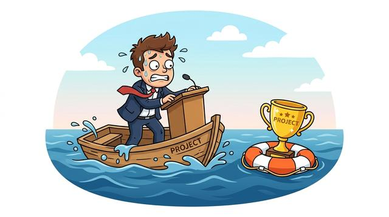
אל תיתנו למצגת גרועה להטביע פרויקט טוב
Don’t Let a Bad Talk Sink a Good Project
Ten tips for presenting technical work: build a narrative, justify only the choices that had real alternatives, keep slides clean, speak in precise technical language, rehearse on camera, and spend your time where the information is.
איך לכתוב למרצה שלכם
How to Write to Your Instructor
Five habits for a good message: try to answer it yourself first, include all the context, be brief and careful with wording, stay polite and professional, and expect links or an AI transcript in reply.
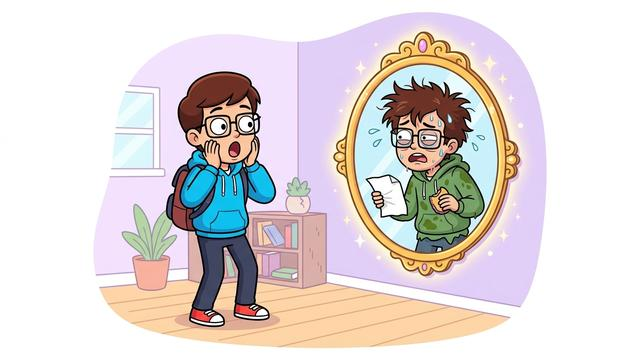
האמת הכנה והברוטלית על למידה
The Honest, Brutal Truth About Learning
Decide and shape your skillset, then face five hard truths: aim for skills over passive knowledge, practice relentlessly, do not trust the illusion of mastery school leaves you with, and use AI as your honest mirror.
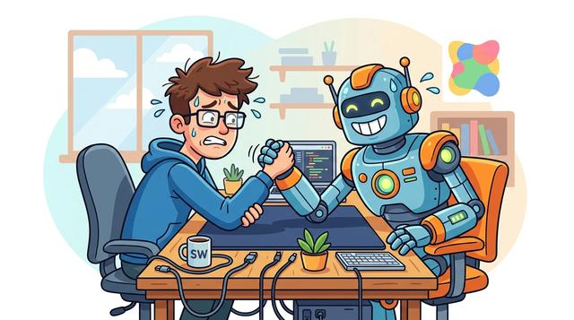
האם AI ייתר מהנדסי תוכנה?
Will AI Make Software Engineers Obsolete?
Common themes as of July 2026: the changing role of the engineer, where vibe coding reaches its limits, writing much less code, why code is still taught, and how uncertain the future really is.
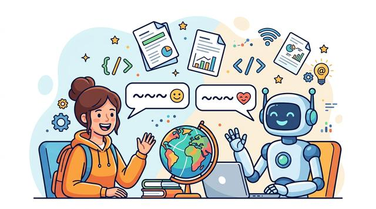
אנגלית בלימודים שלכם
English in Your Studies
The field runs on English. You do not need perfect English, but you do need a basic working level, the standard technical terms, and the habit of working in English from the start.
על קורסי GenAI ו-LLM
התמצאות לסטודנטים בקורסי LLM, GenAI וקורסי AI קרובים: מה מצופה בקורסים האלה, אילו הנחות כדאי להוריד, ואיך להפיק את המרב מהחיבור שבין התואר שלכם ל-AI.
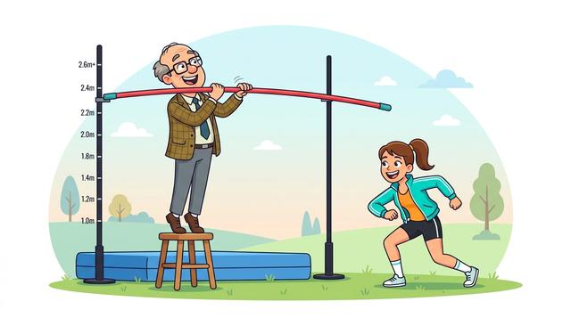
סוג החדשנות היחיד שהקורסים האלה דורשים
The One Kind of Innovation These Courses Require
The three questions behind any project (research, engineering, product) and the three kinds of innovation that answer them. Explains why these courses target scientific innovation, with product value as a floor.
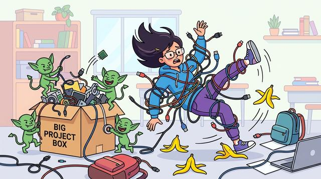
עשרה דברים שסטודנטים טועים בהם בפרויקטים
Ten Things Students Get Wrong About Projects
Ten beliefs that quietly limit what students get out of a project-based course, from mistaking a working demo for engineering skill to treating a course as content to consume. Each comes with the sentence that gives it away.
סטודנטים לרפואה דיגיטלית: אל תבזבזו את היתרון הבין-תחומי שלכם
Medical Technology Students: Don’t Waste Your Cross-Domain Advantage
How to turn the intersection of your degree, medicine and AI, into a standout LLM project: choose a meaningful problem, develop deep domain understanding, keep technological depth, and connect both worlds.
חכם מנצח ארוך
Smart Beats Long
You are graded on the quality of the result, not on hours invested. Five habits that make the same time produce a better project: work smart, start early, reuse aggressively, use the course material, and validate continuously.
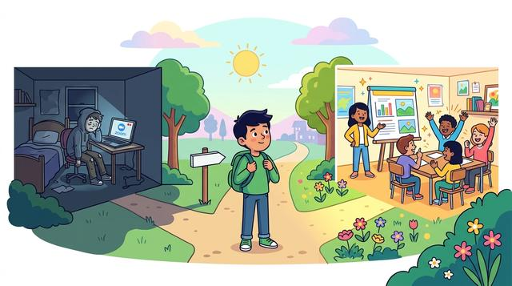
ההקלטות הן לא הקורס
The Recordings Are Not the Course
I record the sessions, but watching lectures is the least important part. The value is live interaction and three required project presentations, so the course is not a fit if you only plan to watch the recordings.
סטנדרטים לפרויקטים בקורסי GenAI ו-LLM
מה פרויקט GenAI או LLM צריך להראות, ואיך בונים את הנתונים שמאחוריו. השתמשו בהם בזמן שהעבודה עדיין מתגבשת.
דרישות פרויקט ב-LLM/GenAI
LLM/GenAI Project Requirements
Twelve requirements a strong course project is expected to satisfy, grouped into four phases from framing the problem through to engineering rigor, each paired with the anti-patterns that most often weaken it.
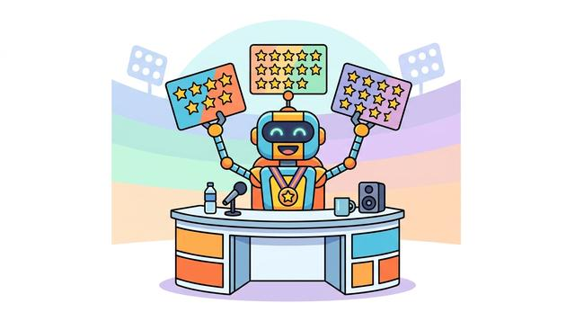
קריטריונים להערכת פרויקט ב-LLM/GenAI
LLM/GenAI Project Assessment Criteria
The five dimensions a project is judged on: domain understanding, depth of solution-space exploration, novelty and reuse, methodological rigor, and how clearly the work is presented and defended.
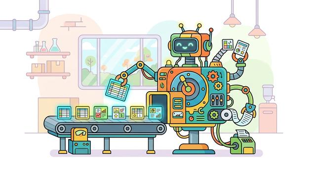
יצירת נתונים סינתטיים לקורסי LLM/GenAI
Synthetic Data Generation for LLM/GenAI Courses
A do-and-don't guide to generating synthetic data for LLM and GenAI projects: research real data first, control what you produce, prototype and debug small, inspect by hand, and compare strategies before scaling.
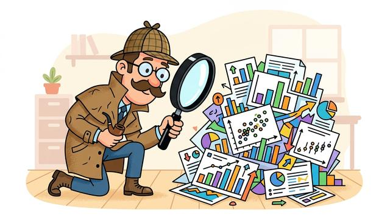
EDA מעשי למאגרי נתונים סינתטיים
Practical EDA for Synthetic Datasets
An eight-objective checklist to run before training: sanity, coverage, realism, variability, label quality, leakage, bias and balance, and difficulty, each with the practical EDA that verifies it.
סטנדרטים לפרויקטים בקורס ראייה ממוחשבת
מה פרויקט חוסן בראייה ממוחשבת צריך להראות ואיך הוא נשפט. השתמשו בהם בזמן שהעבודה עדיין מתגבשת.
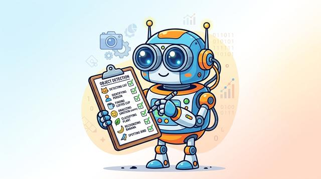
דרישות פרויקט לקורס הראייה הממוחשבת
Project Requirements for Vision Course
What the vision robustness project must do, stage by stage: dataset and task selection, clean baseline, distortion and degradation, restoration and fine-tuning, and documentation, each with its anti-patterns and a suggested weekly plan.
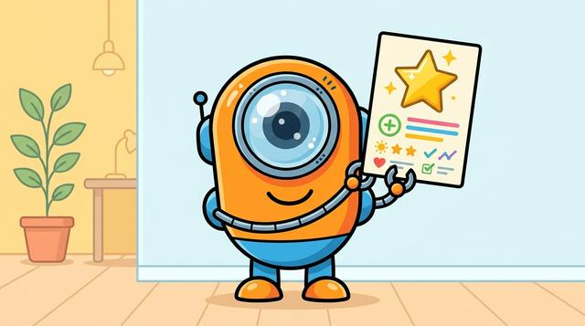
קריטריונים להערכת פרויקט לקורס הראייה הממוחשבת
Project Assessment Criteria for Vision Course
The five dimensions a vision robustness project is judged on: study design, measurement rigor, depth of exploration, recovery analysis, and visualization, each with the strong and weak signals graders look for.
אבני דרך של פרויקט בקורסי GenAI ו-LLM
מה כל אבן דרך משמעותית צריכה להראות: לא רק שנעשתה עבודה, אלא שהצוות מבין את הבעיה, קיבל החלטות טכניות מנומקות, העריך את הפתרון נכון ויכול להעביר את התוצאות בבירור.
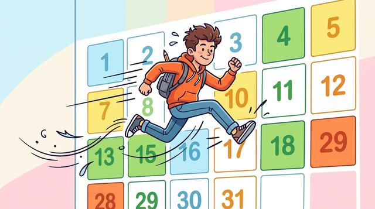
תוכנית שבועית מוצעת לביצוע הפרויקט
Suggested Weekly Plan for Project Execution
A week-by-week roadmap for a 13-week semester: which requirements to advance each week, with the proposal, midterm, and final at weeks 5, 8, and 13, plus weeks 14 and 15 to polish and submit the repository.
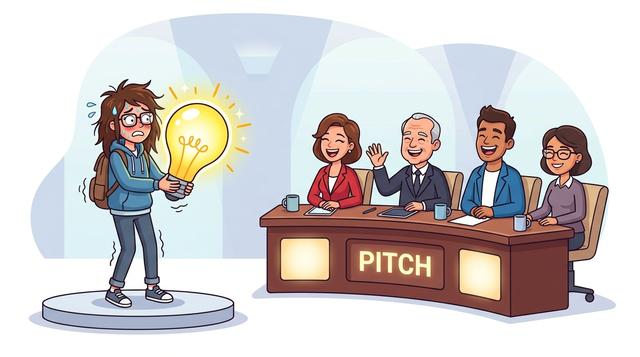
מצגת הצעת הפרויקט
Project Proposal Presentation
Six parts a strong proposal must cover: motivating use case, problem statement, novelty, models and methods, data specification, and an evaluation plan, each with its requirements and the anti-patterns to avoid.
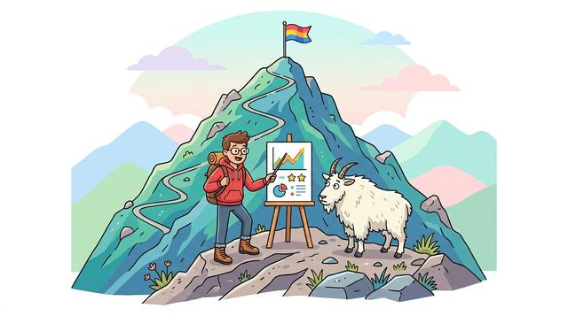
מצגת אמצע
Midterm Presentation
Six parts that show the project has moved from planning to validated work: refinement, previous work, dataset and exploratory analysis, a baseline, initial results with error analysis, and a completion plan.
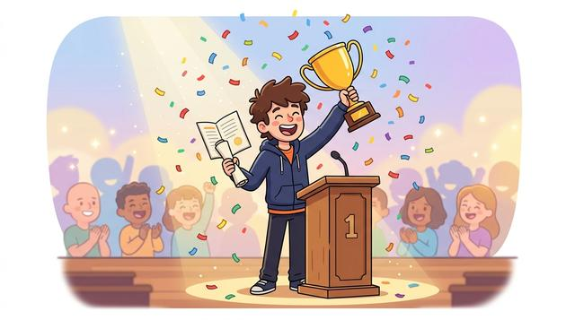
מצגת הגמר
Final Presentation
Seven parts that make the final technical argument: the refined definition, achievements and contributions, methodology, experimental results, interpretation, conclusions, and demonstrated effort.
הגשה ב-GitHub
GitHub Submission
Fifteen parts for a professional repository: naming, structure, a complete README, documented data and models, reproducible training and evaluation, code quality, and a final submission checklist.
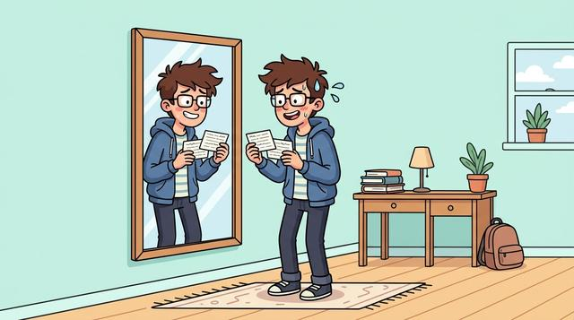
הכנה למצגת בכיתה
Preparing for Your In-Class Presentation
A six-step checklist for the days before you present: set up and register your repository, review the guides, self-evaluate with the course bot, rehearse and time your talk, and act on the instructor's feedback afterwards.
משאבי עבודה
מתודולוגיית ההוראה, דוגמאות עבודה, עוזרי קורס וספרי הלימוד שעליהם הקורסים בנויים.
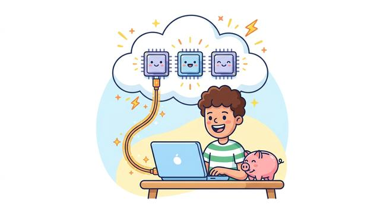
משאבי GPU חינמיים לסטודנטים
Free GPU Resources for Students
For most course projects you do not need to pay for a GPU. Your own machine, the HIT lab computers, and free cloud platforms (Colab, Kaggle, Lightning AI, Modal) cover most of what a project needs.
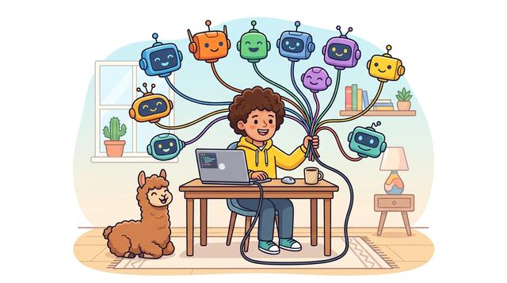
גישה למודלי שפה לסטודנטים
LLM Access for Students
Each project gets a small OpenRouter budget, but you can also use LLMs for free: OpenRouter’s free models or Ollama locally. Plus practical rules to keep your API costs low.
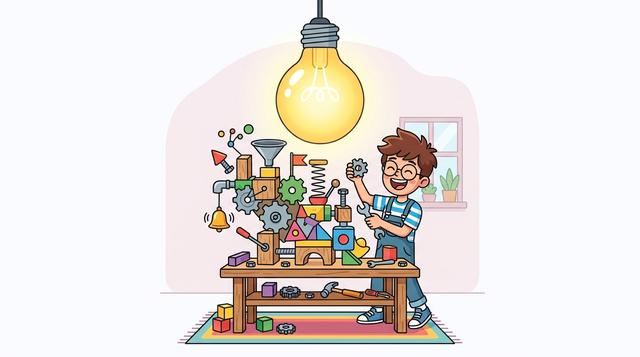
למידה מבוססת חדשנות
Innovation-First Learning
The teaching methodology behind the Hands-On AI Science courses, in ten principles that put building, state-of-the-art tools, and student innovation before formalization.
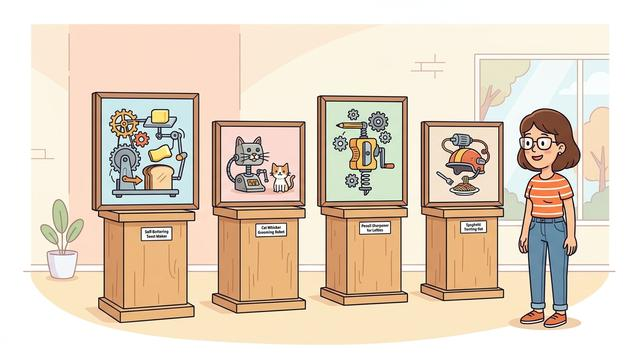
פרויקטים קודמים
Past Projects
Completed student course projects with their repositories and write-ups. The most reliable way to calibrate scope and quality before committing to your own proposal.
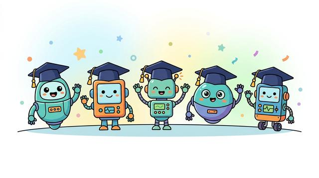
בוטים לקורסים
Course Bots
Course-specific AI assistants grounded in the syllabus and materials. Use them to close knowledge gaps the week they appear, and to challenge your own reasoning rather than to generate work.
ראו לפני שאתם מקודדים
See It Before You Code It
A curated list of 3Blue1Brown's visual explainer videos on neural networks, transformers, and how LLMs actually work. Each video as its own card, watched in order they build a strong mental model before the code.
Online Textbooks
ספרי לימוד מקוונים
The open textbooks behind the course series: Language AI, Vision AI, Scalable AI, Temporal AI, and Embodied AI. Readable online, with companion Android builds.